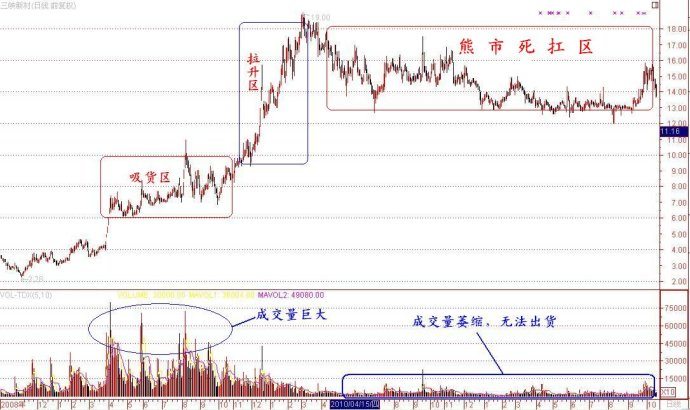
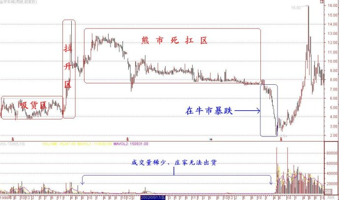

第32篇•三峡新材：即将崩盘的控盘型庄股
谷为陵
控盘型庄股是指被庄家控制了70%以上的公众流通股的庄股，有的高度控盘的庄股，庄家的控盘度可达到90%以上。南方证券坐庄的哈药集团、李彪操盘的亿安科技等昔日大庄股的控盘度竟高达99%！由于散落在外的流通股已经很少，或者说几乎没有，庄家可以随心所欲地操纵股价，因此，控盘型庄股的涨幅都很大，涨幅一般在3～5倍以上。
由于控盘型庄股涨幅大，庄家的账面收益高，因此，控盘型坐庄曾成为沪深股市自1997年至2003年的“庄家时代”的主流坐庄模式。但凡事物总有两面性：高收益必然伴随高风险，否则，世界上的钱不都让庄家赚走了？控盘型坐庄也是如此，该种坐庄方式曾经成就了一批乱世枭雄，但随着包括资本大鳄“德隆系”在内的众多庄家集团的覆灭，该种坐庄方式最终毁灭了整个庄家时代。
控盘型坐庄的问题究竟在哪里？我认为有四个方面的问题：一是股价严重脱离基本面，导致庄家无法出货。二是A股牛短熊长，做长庄没有好下场。三是庄家大量使用高成本融资，属于饮鸩止渴。四是监管日益严格，控盘坐庄难度加大。具体阐述如下：
第一，股价严重脱离基本面，导致庄家无法出货。被庄家选中坐庄的股票，绝大部分质地较差，属于总也见不到真实业绩的题材股，即使有个别庄股有业绩，也如银广夏、蓝田股份、东方电子等一样，是依靠造假得来的业绩，多数投资者是不相信的。这些股票在股价处于低位时本身就不具备投资价值，被庄家炒高后就更脱离其基本面了，在股价高位没有人再敢买入，因失去流动性，庄家无法出货。
第二，A股牛短熊长，做长庄没有好下场。控盘式坐庄周期很长，都是长庄，因为仅吸货过程一般都需要半年之一年时间，而出货时间也很长，整个操作周期在1至2年，甚至2至3年。最关键的问题是，由于无法出货，大部分控盘型庄股在股价高位，只得长期横盘，以待时变。只有遇到长期大牛市，等待或许有转机。但A股的特点是牛短熊长，长期等待的结果就必定要遇到一轮大熊市，而A股大熊市的杀伤力是无以伦比的，所以，控盘型庄股在高位横盘，这本身就是战略性错误，等待的结果一定是凶多吉少。最顽强的庄家“德隆系”控盘的“三驾马车”，它们的股价一直扛到2003年而不倒，但最终还是被大熊市吞没了。无数事实证明，长庄难以扛过大熊市。
第三，庄家大量使用高成本融资，属于饮鸩止渴。很多庄家在将某只股票炒高后，虽然出不了货，但他们却因此而意外地发现了一个全新的融资途径：若将其坐庄持有的股票进行抵押，就可获得巨额的融资。股票市值打折率一般在5折左右，即一亿元市值的股票，可抵押融资5000万元。庄家们在得到融资后，还可以坐庄其他股票，在将其他股票炒高后，又可继续抵押融资。如此反复操作，虽然股票都没有出货，但持有的股票市值却急剧膨胀，庄家的账面收益惊人。但天下没有不散的宴席，就在这种老鼠会式的融资方式在普及后，“中科系”因内乱而率先崩盘，使得社会上的资金提供方看到了发现，几乎是立即就掐断了资金的供给渠道。庄家借不到新钱还旧钱，融资方就只好按照先前的融资协议，强行平仓，从而引发股价崩盘的多米诺骨牌效应。资金链一断，庄家的末日就到了。
自2003年以后，因以上三个原因，加之证监会对于坐庄行为的监管和打击力度的加大，时至今日，控盘式庄股几乎绝迹。但令人难解的是，不知是哪位庄家相中了三峡新材(600293)，竟对该股进行了控盘式坐庄操作。下面是该股的坐庄示意图：

从该股目前的走势分析，该股似离崩盘为时不远了。为什么这样说呢？对照以上控盘型坐庄的三个问题，我认为该股即将崩盘也有三个理由：
一是庄家无法出货。三峡新材质地平平，有无甚重大利好题材，股价已经脱离基本面，没有人在此股价高位跟风，目前该股成交量稀少，其中大部分还是庄家对敲所为，庄家使出浑身解数也无法出货。
二是面临熊市的致命一击。沪深股市自2009年7月至今，已经进入熊市两年之久，但该股却自2010年3月至今的一年半里，一直在高位横盘，拒绝下跌。若股市暂时没有好转，那么，该股最终必然会补跌，而一旦补跌就会出现崩盘式暴跌。
三是从股价走势看，该股应该有融资。有融资的庄家不敢让股价下调，以免触发平仓盘，所以，只得依靠横盘而死扛。但能否扛过去，要看这轮熊市能够持续多久，若持续时间很长，那么，该庄家的结局一定会很悲惨。
其实，即使明年股市见底，该股也不见得会上涨，也可能会崩盘。因为在牛市到来的时候，投资者关注的是那些超跌的好股票，而不是这类股价一直抗跌的庄股，该股仍会受到投资者的冷落，仍然缺乏流动性，庄家还是跑不了。该股很可能会是在牛市中逆市崩盘的股票。
金宇车城（000803）就是前车之鉴。金宇车城曾是沪深股市最后一只崩盘的控盘型庄股，该股庄家毅力顽强，一直从2000年初死扛到2006年2月份，竟然躲过了2001年6月至2005年6月的特大熊市。但“躲过初一，躲不过十五”，该股最终还是在牛市来临的2006年2月份扛不住而崩盘了，股价从8元一气暴泄到2元。
下面是金宇车城自1998年至2007年底的走势与庄家坐庄示意图：

目前，三峡新材在熊市的死扛走势与当年金宇车城如出一辙。我认为，该股离崩盘已经不远了，也许到了那时，对于其他投资者来说才是介入机会。